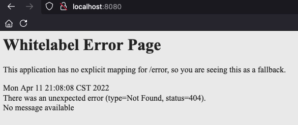
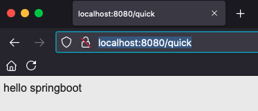
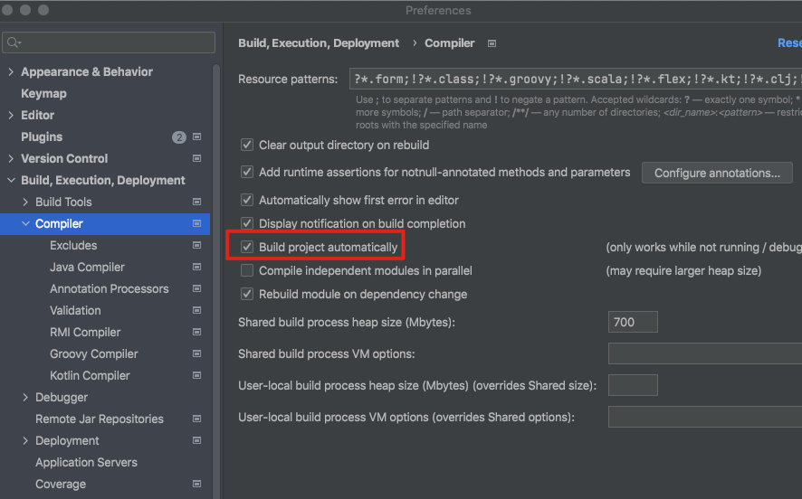
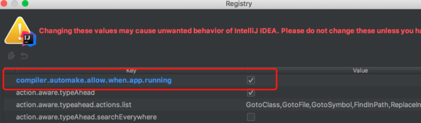
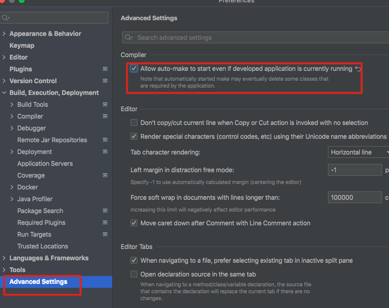
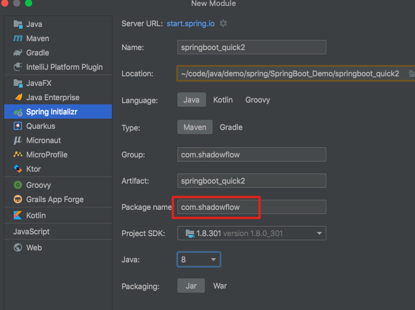
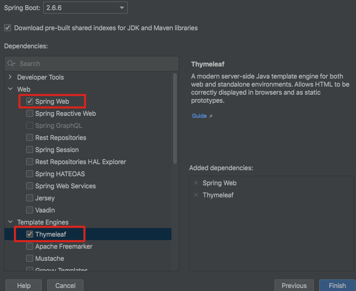

SpringBoot入门案例
1. 入门案例
创建基本的maven工程
1.1 添加SpringBoot的起步依赖
SpringBoot要求，项目要继承SpringBoot的起步依赖spring-boot-starter-parent
1 | <parent> |
SpringBoot要集成SpringMVC进行Controller的开发，所以项目要导入web的启动依赖
1 | <dependencies> |
1.2 编写SpringBoot引导类
要通过SpringBoot提供的引导类起步SpringBoot才可以进行访问
1 | package com.shadowflow; |
@SpringBootApplication：标注SpringBoot的启动类，该注解具备多种功能（后面详细剖析）SpringApplication.run(MySpringBootApplication.class)代表运行SpringBoot的启动类，参数为SpringBoot启动类的字节码对象
点击启动，访问8080端口有如下页面

1.3 编写Controller
1 | package com.shadowflow.controller; |

2. SpringBoot的热部署
我们在开发中反复修改类、页面等资源，每次修改后都是需要重新启动才生效，这样每次启动都很麻烦，浪费了大量的时间，我们可以在修改代码后不重启就能生效，在 pom.xml 中添加如下配置就可以实现这样的功能，我们称之为热部署。
1 | <!--热部署配置--> |
这时候我们修改，如果不重启并不会生效，这是IDEA的问题，需要我们设置
1.打开IDEA的设置做如下修改

- mac上快捷键：Command + Shift + A，搜索Registry

2021后的版本在设置里面

这样，修改文件就会重新部署，但是比较慢，耗费性能，我自己用就关了。
3. 使用idea快速创建SpringBoot项目
创建新的模块


4. SpringBoot的配置文件
SpringBoot是基于约定的，所以很多配置都有默认值，但如果想使用自己的配置替换默认配置的话，就可以使用application.properties或者application.yml（application.yaml）进行配置。
SpringBoot默认会从Resources目录下加载application.properties或application.yml（application.yaml）文件
其中，application.properties文件是键值对类型的文件
4.1 properties举例
1 | #服务器端口 |
4.2 yaml
YML文件格式是YAML (YAML Aint Markup Language)编写的文件格式，YAML是一种直观的能够被电脑识别的的数据数据序列化格式，并且容易被人类阅读，容易和脚本语言交互的，可以被支持YAML库的不同的编程语言程序导入，比如： C/C++, Ruby, Python, Java, Perl, C#, PHP等。YML文件是以数据为核心的，比传统的xml方式更加简洁。
YML文件的扩展名可以使用.yml或者.yaml。
4.3 yml配置文件的语法
配置普通数据
语法： key: value
示例代码：
1
name: haohao
注意：value之前有一个空格
配置对象数据
语法：
key:
key1: value1
key2: value2
或者：
key: {key1: value1,key2: value2}
示例代码：
1
2
3
4
5
6
7
8person:
name: haohao
age: 31
addr: beijing
#或者
person: {name: haohao,age: 31,addr: beijing}注意：key1前面的空格个数不限定，在yml语法中，相同缩进代表同一个级别
**配置Map数据 **
同上面的对象写法
配置数组（List、Set）数据
语法：
key:
- value1
- value2
或者：
key: [value1,value2]
示例代码：
1
2
3
4
5
6
7
8
9
10
11
12
13
14
15
16
17
18
19
20
21city:
- beijing
- tianjin
- shanghai
- chongqing
#或者
city: [beijing,tianjin,shanghai,chongqing]
#集合中的元素是对象形式
student:
- name: zhangsan
age: 18
score: 100
- name: lisi
age: 28
score: 88
- name: wangwu
age: 38
score: 90- 注意：value1与之间的 - 之间存在一个空格
4.4 SpringBoot配置信息的查询
面提及过，SpringBoot的配置文件，主要的目的就是对配置信息进行修改的，但在配置时的key从哪里去查询呢？我们可以查阅SpringBoot的官方文档
常用的配置摘抄如下：
1 | # QUARTZ SCHEDULER (QuartzProperties) |
我们可以通过配置application.poperties 或者 application.yml 来修改SpringBoot的默认配置
例如：
application.properties文件
1 | =8888 |
application.yml文件
1 | server: |
4.5 配置文件与配置类的属性映射方式
使用注解@Value映射
我们可以通过@Value注解将配置文件中的值映射到一个Spring管理的Bean的字段上
例如：
application.properties配置如下：
1 | person: |
或者，application.yml配置如下：
1 | person: |
实体Bean代码如下：
1 |
|
使用注解@ConfigurationProperties映射
通过注解@ConfigurationProperties(prefix=”配置文件中的key的前缀”)可以将配置文件中的配置自动与实体进行映射
application.properties配置如下：
1 | person: |
或者，application.yml配置如下：
1 | person: |
实体Bean代码如下：
1 |
|
注意：使用@ConfigurationProperties方式可以进行配置文件与实体字段的自动映射，但需要字段必须提供set方法才可以，而使用@Value注解修饰的字段不需要提供set方法。
5. SpringBoot整合
5.1 SpringBoot整合Mybatis
添加Mybatis的起步依赖
1
2
3
4
5
6<!--mybatis起步依赖-->
<dependency>
<groupId>org.mybatis.spring.boot</groupId>
<artifactId>mybatis-spring-boot-starter</artifactId>
<version>1.1.1</version>
</dependency>添加数据库驱动坐标
1
2
3
4
5<!-- MySQL连接驱动 -->
<dependency>
<groupId>mysql</groupId>
<artifactId>mysql-connector-java</artifactId>
</dependency>添加数据库连接信息
在application.properties中添加数据量的连接信息
1
2
3
4
5#DB Configuration:
spring.datasource.driverClassName=com.mysql.jdbc.Driver
spring.datasource.url=jdbc:mysql://127.0.0.1:3306/test?useUnicode=true&characterEncoding=utf8
spring.datasource.username=root
spring.datasource.password=root创建user表
在test数据库中创建user表
1
2
3
4
5
6
7
8
9
10
11
12
13
14
15
16
17-- ----------------------------
-- Table structure for `user`
-- ----------------------------
DROP TABLE IF EXISTS `user`;
CREATE TABLE `user` (
`id` int(11) NOT NULL AUTO_INCREMENT,
`username` varchar(50) DEFAULT NULL,
`password` varchar(50) DEFAULT NULL,
`name` varchar(50) DEFAULT NULL,
PRIMARY KEY (`id`)
) ENGINE=InnoDB AUTO_INCREMENT=10 DEFAULT CHARSET=utf8;
-- ----------------------------
-- Records of user
-- ----------------------------
INSERT INTO `user` VALUES ('1', 'zhangsan', '123', '张三');
INSERT INTO `user` VALUES ('2', 'lisi', '123', '李四');创建实体Bean
1
2
3
4
5
6
7
8
9
10
11
12
13public class User {
// 主键
private Long id;
// 用户名
private String username;
// 密码
private String password;
// 姓名
private String name;
//此处省略getter和setter方法 .. ..
}编写Mapper
1
2
3
4
public interface UserMapper {
public List<User> queryUserList();
}注意：@Mapper标记该类是一个mybatis的mapper接口，可以被spring boot自动扫描到spring上下文中
配置Mapper映射文件
在src\main\resources\mapper路径下加入UserMapper.xml配置文件”
1
2
3
4
5
6
7
<mapper namespace="com.itheima.mapper.UserMapper">
<select id="queryUserList" resultType="user">
select * from user
</select>
</mapper>在application.properties中添加mybatis的信息
1
2
3
4
5#spring集成Mybatis环境
#pojo别名扫描包
=com.itheima.domain
#加载Mybatis映射文件
=classpath:mapper/*Mapper.xml编写测试Controller
1
2
3
4
5
6
7
8
9
10
11
12
13
14
public class MapperController {
private UserMapper userMapper;
public List<User> queryUser(){
List<User> users = userMapper.queryUserList();
return users;
}
}
5.2 SpringBoot整合Junit
添加Junit的起步依赖
1
2
3
4
5
6<!--测试的起步依赖-->
<dependency>
<groupId>org.springframework.boot</groupId>
<artifactId>spring-boot-starter-test</artifactId>
<scope>test</scope>
</dependency>编写测试类
1
2
3
4
5
6
7
8
9
10
11
12
13
14
15
16
17
18
19
20
21
22
23
24
25
26
27package com.itheima.test;
import com.itheima.MySpringBootApplication;
import com.itheima.domain.User;
import com.itheima.mapper.UserMapper;
import org.junit.Test;
import org.junit.runner.RunWith;
import org.springframework.beans.factory.annotation.Autowired;
import org.springframework.boot.test.context.SpringBootTest;
import org.springframework.test.context.junit4.SpringRunner;
import java.util.List;
public class MapperTest {
private UserMapper userMapper;
public void test() {
List<User> users = userMapper.queryUserList();
System.out.println(users);
}
}其中，SpringRunner继承自SpringJUnit4ClassRunner，使用哪一个Spring提供的测试测试引擎都可以
1
public final class SpringRunner extends SpringJUnit4ClassRunner
@SpringBootTest的属性指定的是引导类的字节码对象